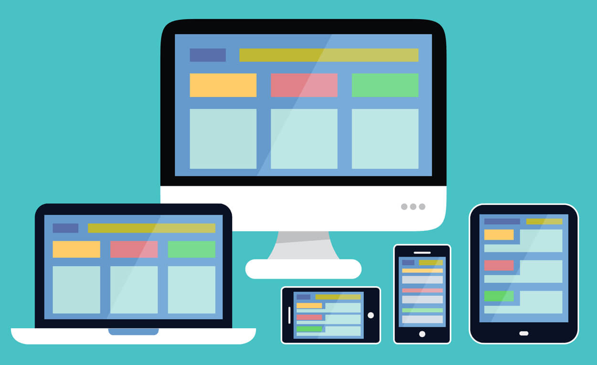

Web dizajn odnosi se na izgled i korisničko iskustvo web sajta. Kombinuje nekoliko disciplina
uključujući:grafički dizajn, dizajn informacija, dizajn interfejsa, HTML stil i grafiku, izradu, skripting i
programiranje, multimediju. Frontend je deo web razvoja i predstavlja implementaciju dizajna i
funkcionalnosti interfejsa u pregledaču. Frontend čine sledeći poslovi: grafički dizajn, dizajn interfejsa,
izrada sajta uključujući HTML, dokumenta i stilovi i JavaScript. Backend je deo web aplikacije koji
se nalazi na serverskoj strani i koji je odgovoran za funkcionalnost, logiku, obradu podataka i komunikaciju
sa bazom podataka. Sledeći poslovi se odvijaju na backend strani: obrada formi, programiranje baze podataka,
sistemi za upravljanje sadržajem, druge serverske aplikacije korišćenjem Perl/CGI, PHP,
ASP.NET, JSP, Ruby on Rails, Java i drugih programskih
jezika.
Planiranje sajta uključuje skup važnih pitanja kao što su:
Kakav treba da bude vaš sajt?
Koja je svrha vašeg sajta?
Koji auditorijum nastojite da obuhvatite?
Zatim obuhvata i sledeće korake:
Odredite ciljeve sajta
Analizirajte vaš auditorijum
Analizirajte konkurenciju
Upoznajte svoje sopstvene sposobnosti
Mapirajte postojeći sajt
Kreirajte novi sajt
Ciljevi sajta i smernice:
Zašto se stvara ovaj sajt?
Šta vlasnik sajta očekuju da ćе se postići sa ovim sajtom?
Koje akcije vlasnik sajta želi da postigne kod publike kao
rezultat posete sajtu?
Koja ograničenja ili smernice se moraju poštovati prilikom
izrade sajta?
Faze web projekta:
Faza ugovaranja (inicijacija)
Faza planiranja
Faza dizajna
Faza izgradnje
Faza testiranja
Lansiranje (startovanje) sajta
Održavanje sajta
Postoje četiri vrste zahteva: Poslovni zahtevi, Tehnički zahtevi, Korisnički zahtevi i Dizajnerski
zahtevi. Poslovni zahtevi definišu cilj vašeg web sajta (npr. informisanje, prodaja, privlačenje korisnika
itd.). Rezultat ovog zahteva biće sadržaj sajta. Tehnički zahtevi omogućavaju brzo učitavanje
sadržaja, kompatibilnost sa različitim web pregledačima i uređajima, kao i optimizaciju za pretraživače.
Korisnički zahtevi obezbeđuju da sajt bude dostupan, čitljiv, lak za korišćenje i prilagođen ciljnoj
grupi. Dizajnerski zahtevi podrazumevaju usklađivanje dizajna sa sadržajem, prilagođavanje
korisničkom ekranu, isticanje najvažnijih informacija pri učitavanju, jednostavnu navigaciju, jasno
razlikovanje linkova od ostatka sadržaja i dobru čitljivost teksta. Kreiranje i organizovanje sadržaja
Slika 1: Wireframes - struktura ("skeleton") web stranice - vizuelni prikaz
Osnovna provera kvaliteta
Da li je sav potreban sadržaj na sajtu?
Da li postoje greške u kucanju ili gramatičke greške?
Da li sve veze (linkovi) rade?
Da li se sve slike prikazuju?
Da li svi skriptovi i aplikacije funkcionišu kako treba?
Registracija domena: Postoje dva načina: uzeti hosting kompaniju da to uradi
umesto vas, ili dobiti domen direktno iz registra. Neki od najpopularnijih su Network Solutions
(www.networksolutions.com), originalni registar domena;
Register.com (www.register.com), koji je takođe bio prisutan
duže vreme, i GoDaddy (www.godaddy.com) , poznat po
svojim niskim cenama.
WEB dizajn - SMERNICE
Jednostavnost dizajna - Jedan od ključnih principa dobrog web dizajna je jednostavnost.
Prenaglašen
i pretrpan dizajn može odvući pažnju korisnicima i otežati navigaciju. Korišćenje praznog prostora
omogućava korisnicima da lakše fokusiraju pažnju na bitne elemente stranice. Slike treba da budu visoko
kvalitetne i pozicionirane tako da usmeravaju korisnika i pomažu u boljoj navigaciji.
Boje - Boje imaju snažan uticaj na emocionalne reakcije korisnika, pa je
najbolje koncentrisati se na nijanse jedne boje ili boja iz iste palete. Previše boja može izazvati
konfuziju, pa je preporučljivo koristiti ograničen broj boja, a jake i naglašene boje koristiti za
elemente kao što su dugmadi ili pozivi na akciju.
Tipografija - Tipografija igra veliku ulogu u čitljivosti i estetskom izgledu sajta. Za tekst je
najbolje koristiti Sans Serif fontove, jer su lakši za čitanje na ekranima. Preporučuje se korišćenje
najviše tri različita fonta i veličine između 12-16 pt za telo teksta. Ukrasni fontovi mogu se koristiti
za naslove i logotipe, ali treba ih koristiti umerenim.
Konzistentnost dizajna - Jedan od najboljih načina da steknete poverenje
posetilaca jeste da
dizajn sajta bude konzistentan (npr. ista pozicija menija na stranicama, isti fontovi, šema boja, itd.).
Potrebno je održati konzistentnost i između banera, linkovane
stranice i samog sajta.
Korisničko iskustvo - Ljudi obično skeniraju web stranicu u obliku slova "E", pa je zato dizajn
zasnovan na mreži (grid) najlakši za praćenje. Da bi se korisnicima olakšalo skeniranje sadržaja, umesto
dugačkih tekstova koristite naslove, podnaslove, liste (bullets) i istaknute delove. Važni elementi kao
što su dugmad za registraciju, kupovinu ili akcije, treba da budu pozicionirani u gornjem delu stranice
koji je vidljiv bez potrebe za skrolovanjem.
Brzina učitavanja sajta - Danas se očekuje da sajtovi učitavaju za tri sekunde ili manje. Kako
biste optimizovali brzinu učitavanja, kompresujte slike, koristite HTTP kompresiju, keširanje i
odaberite odgovarajući hosting paket.
Dizajn za mobilne uređaje - S obzirom na to da više od polovine korisnika pristupa internet
sadržaju putem mobilnih uređaja, važno je da sajt bude prilagođen mobilnim uređajima (responsive
design), čime se obezbeđuje dosledno korisničko iskustvo na svim uređajima.

Slika 2: Responsive design - Dizajn za mobilne uređaje
Optimizacija je proces poboljšanja performansi i efikasnosti sajta kako bi bolje funkcionisao, bio
brži, sigurniji i korisnicima pružao bolje iskustvo. Optimizaciju sajta čine praćenje rada sajta
(monitoring), analiza logova, redovno testiranje performansi i funkcionalnosti, kao i kontinuirano
ažuriranje i inoviranje sajta.